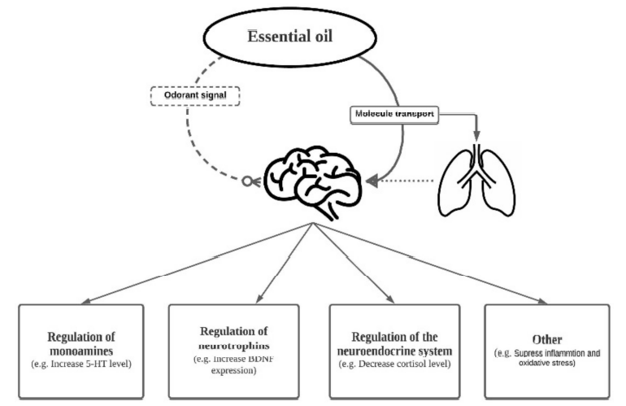

Class
Bio Zero
Date
11 November 2021
Instructors
Nuria Conde & Jonathan Minchin
Scientific Paper-
Therapeutic Effect and Mechanisms of Essential Oils in Mood Disorders: Interaction between the Nervous and Respiratory Systems
I wanted to read the selected scientific article on the chosen topic because I am interested in the senses and how they have immediate and long-lasting effects on people going about their lives. I have always had essential oils around me, and have read about the positive effects they have on mood. I wanted to learn more about how this occurs at a cellular level. I also found the article interesting because it examines the interaction of essential oils on both nervous and respiratory systems. The relationship between the physical and chemical changes that can occur due to volatile essential oils is amazing and I feel could be very impactful as an accessory to treatments in mood disorders.
Fung TKH, Lau BWM, Ngai SPC, Tsang HWH. Therapeutic Effect and Mechanisms of Essential Oils in Mood Disorders: Interaction between the Nervous and Respiratory Systems. International Journal of Molecular Sciences. 2021; 22(9):4844. https://doi.org/10.3390/ijms22094844
The article described how essential oils (EO) could play a part in affecting behavioral and physical change through varying pathways and mechanisms in the body. It relayed the information that studies on EO have shown that they can reduce pain and anxiety, and increase relaxation when used with other treatments. Combining their components helps reach the maximum effect. Using EO by way of absorption of small molecules by inhalation of nanoparticles has positive effects on both mood and physiological health such as blood pressure. The primary benefits in relation to mood disorders are reducing feelings of depression and anxiety. The paper notes lavender, orange citrus, ylang-ylang, and bergamot as primary ones.
EO decrease anxiety by increasing levels of serotonin and dopamine while increasing brain-derived neurotrophic factors in depression. It was found that the efficacy of EO depends on active compounds and concentrations of individual oils and how they interact with neurotransmitter pathways. Essential oils can alter mood by sending signals through the olfactory system. The smaller particles that are breathed are easier to take in and process throughout the body because of their size. This is possible through both olfactory (sense of smell) and respiratory (breathing) systems. A point that was very interesting was the fact that the olfactory system is unique because it has direct connections to the limbic (brain) system. The article states that the way smells trigger brain functions is through the olfactory sensory neurons. Smells are perceived by a combo of receptors, cells, and transmission to neurons. The olfactory part of the brain involves multiple parts that relay information to all parts of the limbic system. Chemicals in the brain that are triggered by essential oils can have a direct and calming impact on mood. The scents can send electrical signals that trigger specific physiological effects for mood and behavior. However, explicit brain mapping has not yet been pinned down. Besides sending through brain signals, EO can be directly absorbed by cells as they pass through the neural network. They do this through intra and extracellular transport of molecules in the neural network of the olfactory system.
Essential oils also interact with the respiratory and central nervous system. The molecules are able to enter the respiratory system through alveolar sacs, crossing the blood brain barrier. They mainly reach the body by alveolar diffusion. The interplay between breathing in the respiratory system and essential oils is interesting because the act of breathing has both physiological and psychological effects on the body, triggering emotional responses. As stated earlier, the EO have been seen to help decrease depression in both humans and animals. Essential oils such as lavender, sweet orange, Ylang-ylang, and bergamot do this by boosting 5-HT. Again aiding with mood disorders, they increase neural growth and neurogenesis which helps against depression. In terms of stress in the neuroendocrine system, they behave similarly. They help control cortisol levels which are linked to stress, and decrease inflammation due to antioxidants, lessening negative symptoms of anxiety and depression. In order to further the research of EO on a molecular level, specific compounds should be identified.
Making A Mutant
The purpose of this assignment was to try to understand biologic parts and how they interact at a deeper level, how we can use synthetic biology to create modified life forms that may help us achieve something deemed necessary for today’s world. We took inspiration from IGEM, an organization that focuses on open synthetic biology through friendly and progressive competition.